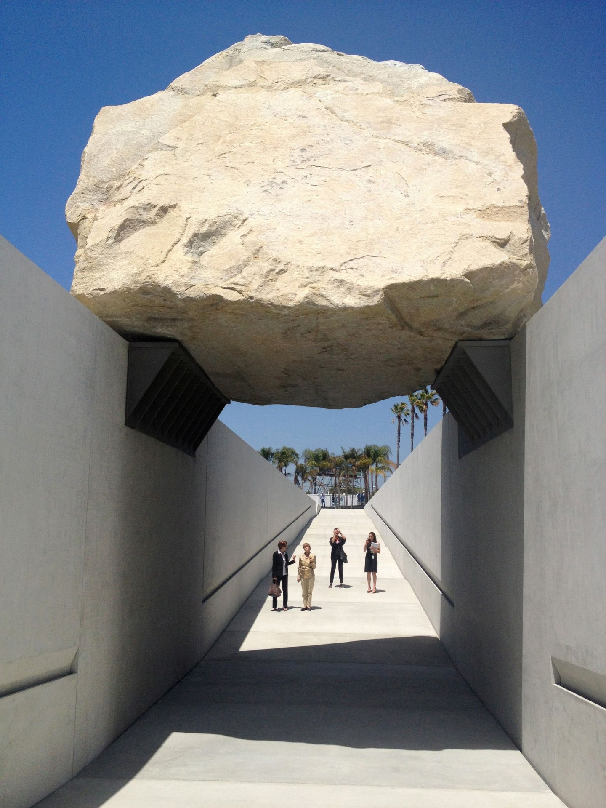

Generally speaking, a system refers to a group of related individuals who operate according to certain rules and can complete the work that individual components cannot complete alone.
1）Modularity：Modularity is a kind of system attribute, that is, the individual with the same function is isolated and divided into independent modules, which can run independently. The purpose of inter module call is to reduce the coupling between modules, from the former main application and module coupling, to the main application and interface coupling, interface and module coupling. The module is like a power bank with multiple USB ports. It can be charged with multiple mobile phones, and the interface can be plugged and unplugged at will. It has strong reusability and can be managed independently.
2)Decomposability：Decomposability refers to the inability to decompose objects further, which means the disappearance of functionality.
3)Emergence：Emergence is a phenomenon, for many small entities interact with each other to produce a large entity, and this large entity shows the characteristics of the small entities that make up it.
4)Chaos Theory：Chaos theory is a method of qualitative thinking and quantitative analysis, which is used to explore the behavior that must be explained and predicted by the whole, continuous rather than single data relationship in dynamic system. For example: population movement, chemical reaction, meteorological change, social behavior, etc. At the same time, its consequences are diverse.
Tessellation refers to filling a larger surface with a smaller repeated surface without leaving any gaps. The Tessellation example I met is the enlarged leaf, I can see that its vein is filled by the same quadrilateral. Although the size of these quadrilaterals is not the same, these quadrilateral are filled together.
Tessellation refers to the call and reuse of small units, which can also be nested among units and combined into large units. This fills the gap between almost no spaces at all. And modularity is like a separate function and project, which can call units to form modules.The most important thing about tessellation is reuse, and modularity is callable.
Complexity is not designed according to certain laws. It is irregular and almost has no form. Uniform is unified regularly, it has form.
...
First of all, their works are all field specific art, all of which are created for specific places. That is, artists take the location into account when planning and creating such works of art. Secondly, their creative process, methods and purposes are different. Walter de Maria is committed to the integration of art and nature. Banksy is more of a device, which together with a specific scene produces a thought-provoking effect.
All sign art is a kind of symbol that expresses certain meanings with a specific image. In order to establish a relatively accurate relationship between the image and the meaning to be expressed, people often use a method of symbol design. Some "suggestive" signs need to be kept eye-catching to make people realize the relevance that needs attention at a glance.
Levitated Mass is a 2012 large-scale public art sculpture by Michael Heizer at Resnick North Lawn at the Los Angeles County Museum of Art. A 340 ton Boulder, in the design of the building structure, this boulder "suspended" up, people can walk under the boulder. People can walk under the boulder and respond to its location. People will feel a sense of oppression of existence - a sense of insecurity in a safe situation, a sense of awe for a great sense of existence.
We know dinosaurs through the papers of scientists and the paintings of paleontologists. To understand the evolution of dinosaurs, we need to observe the bones of each dinosaur. Each bone may be different according to its size, fat or thin. When depicting dinosaurs without giving them movement and expression, it makes them look sluggish. So what actions and expressions paleontologists gave dinosaurs influenced our understanding of dinosaurs.
John Conway combines the latest scientific result with his imagination based on the possibility of science，to do the research. John Conway's way of research reminds me of the word "Design Fiction."
Aimee Mullins —— an American actor, model and athlete who She amputated her limbs from a young age and received prosthetic limbs to walk and move. Aimee did not as other amputees did because they could not overcome the pain caused by prosthetics choose to sit in a wheelchair. Instead, after using different prostheses, Almee developed better alternatives by looking for design flaws in prostheses. As the efforts of Aimee and Herr promoteD the progress of prosthetic limb, millions of people benefit from the efforts of Aimee and Herr. It is also because their efforts that have made the prosthetic limb design in the world improved comprehensively.
Material speculation is a combination of counterfactual material and possible world exploration designed to be used. Material speculation is the integration of "impossible to use" artifacts and many "possible to be true" worlds in daily life. .
The article mentions counterfactual artifacts products. This same technique also is used to create objects that things have disappeared in history.